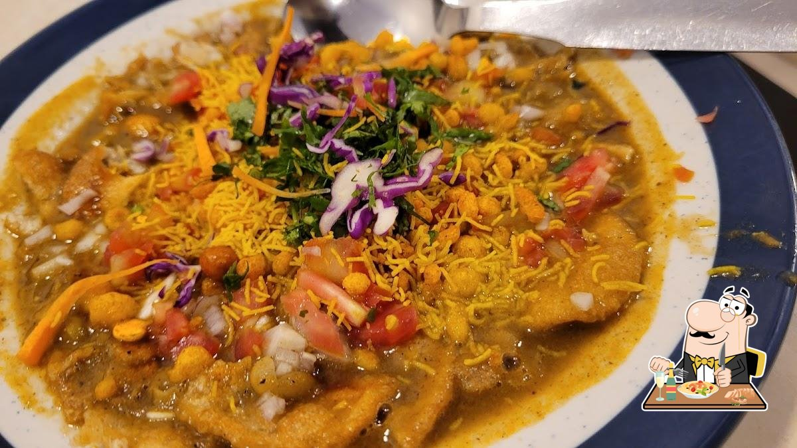
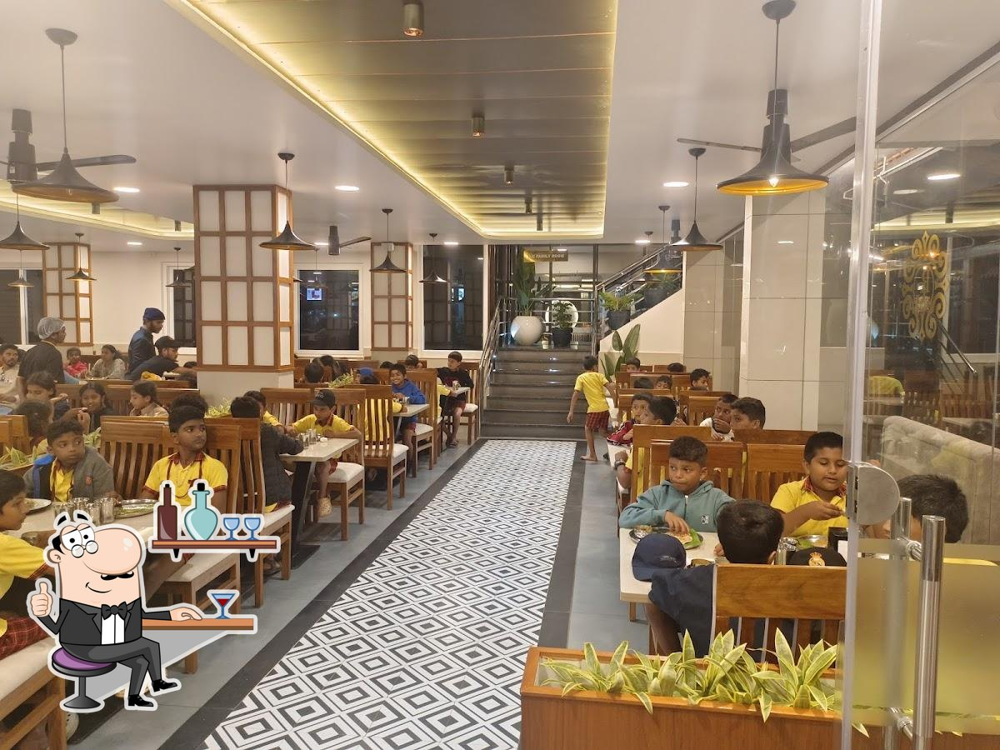
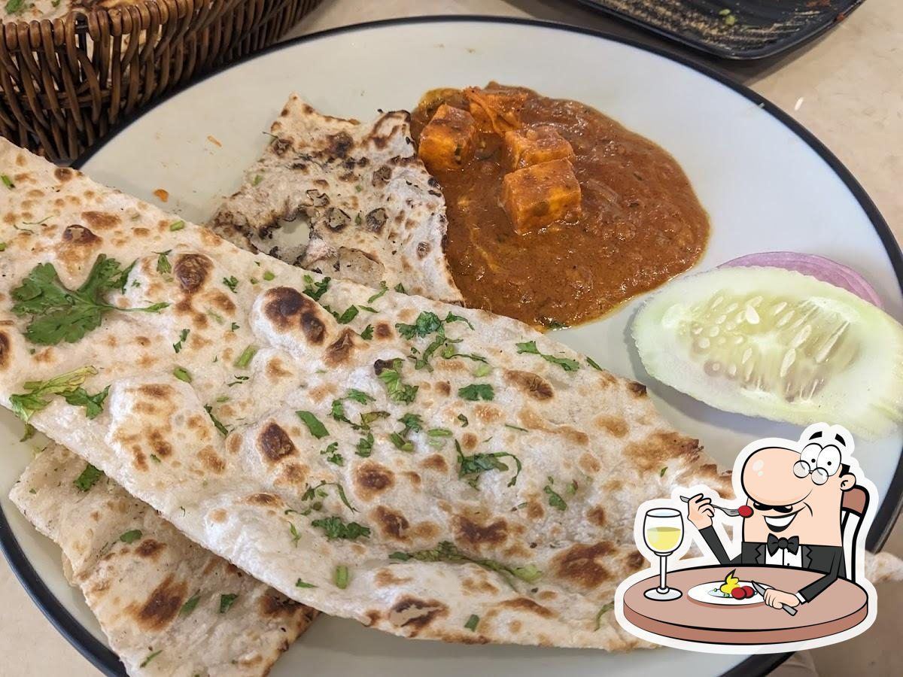
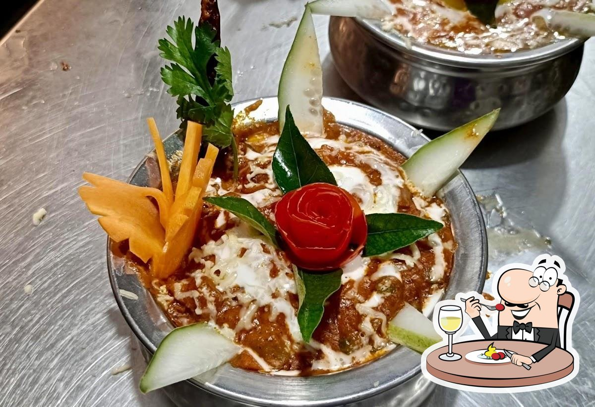
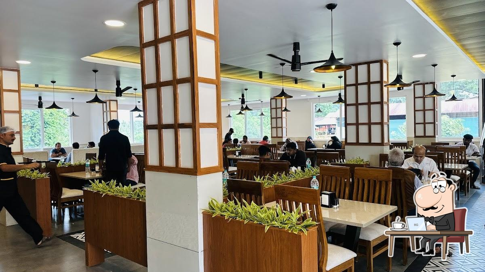

SOMETHING TO START
Bring your appetite
Take a look at the food and discover something to enjoy.
Explore our food ↗A warm welcome. A vegetarian feast.
Make a delicious stop in Aramboor, Sullia.

ARAMBOOR, SULLIAShree Krishna Rasapaaka Grand brings vegetarian dining to Aramboor, Sullia, on the Mysuru–Mani highway route.
From South Indian favourites to Indian and Chinese dishes, come for a meal with family, catch up over coffee, or take a break on your journey.
Explore dishes mentioned in the restaurant’s public listing.

Take a look at the food and discover something to enjoy.
Explore our food ↗
Explore the restaurant’s Indian and Chinese selection.
Explore our food ↗
Photos from the restaurant’s public listing. Ask the team for the current menu, prices and availability.

Make time for a meal and the people you came with.
Find us in Aramboor, Sullia, along the Mysuru–Mani route.
Takeaway is listed as available. Call the restaurant to ask what’s on today.
Shree Krishna Rasapaaka Grand
Aramboor Road, Sullia, Karnataka
Hours are listed online; call to confirm holiday timings or table availability.
Visit & enquiries ↗